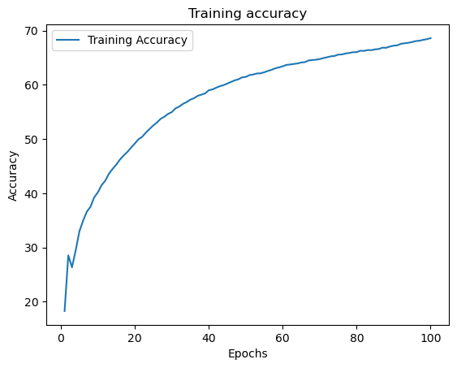

The post is targetted for beginners in the field of NLP. It will offer a hands-on experience of building a simple NLP application.
We will cover the following in this post.
Basics of transforming a textual data into a numeric form
Preparing dataset ready for training
Building a neural network using PyTorch
Training & testing of the neural network model
Surname Dataset
The dataset is a preprocessed version of the original dataset for model-building purposes. In this version of the dataset, we have nationality, nationality_index, split, and surname columns.
nationality: nationality associated with the surname
nationality_index: this is just a number representing the index in a list of nationality (18 nationalities in the case of the dataset)
split: this determines which set the current record belongs to (e.g., training, testing, validation)
surname: the surname entry
We will see here some data samples from the dataset to gain a better understanding of the dataset.
The dataset used in this example can be downloaded from this link.
import pandas as pdimport numpy as npdf = pd.read_csv('surnames_with_splits.csv')print('Columns:\n\t',df.columns)print('Nationality:\n\t',df.nationality.unique())df.head()
We have surnames from18 different nationalities in the dataset.
Basics of transforming a textual data into a numeric form
The first step towards building a machine (or deep) learning model using textual data is to transform the data into a numeric form. This step is known as Vectorization.
There are multiple ways to perform vectorization and in this post, we are using the simplest one using one-hot encoding technique. In one-hot encoding, text data is transformed into a vector of 0/1s.
Let’s take an example to understand the one-hot encoding. Consider we have a dictionary of 500 words and each word is defined with examples on one page.
Now, we have a task to encode a sentence that is formulated using words from the dictionary, into a numeric form. The sentence is “This is a good example”. This sentence could be transformed into a series of 0s occurring 500 times. The position of each zero presents the corresponding page in the dictionary. For example, the 5th position corresponds to the word on the 5th page in the dictionary.
Now, we can check the page numbers for each of the words in the sentence. Let’s say the word This is on the 120th page. We would then put 1 in the series on the 120th position. We would repeat this process for the rest of the words, and that’s it.
We have successfully transformed sentences into a numeric form.
Tip
In our example, the dictionary had an entry for each word. However, this might change depending on the nature of the task at the hand.
In case of surnames, our dictionary would be consisting of characters rather than words.
We will now programatically achieve what is explained above.
In our dataset, we have surname which will be fed to the neural network. We need to transform surnames into numeric forms. To achieve that we will need the followings
Dictionary: A dictionary containing an etry for each character that appeared in the surnames in the dataset
Vectorizer: It will perform the transformation process.
Dictionary
We will start with the dictionary. In simple terms, the dictionary stores each character (appearing in the surnames) in the storage at a particular index. In addition, it also offers mapping functionalities between position index and the corresponding character.
The following class implements the dictionary’s functionality for our dataset. The class has three crucial functions: add_token, lookup_token, and lookup_index. We also have a class function build_from_dataframe which processes the data frames and returns an object of the implemented class.
The following provides a simple and short explanation for each function in the class.
Initialization: During initialization, we create two mapping dictionaries, one for index-token mapping, and another for token-index mapping. We also set the specified unk_token and its flag. There is a likelihood of a surname during testing having a new character which was not in the training dataset. To handle such cases, we can specify whether to have a unk_token which can be used for any non-available characters in the dictionary.
Add a new token: Here, we first simply check whether the token we are going to add already exists in the dictionary or not. If the token is already in the dictionary then we simply return its corresponding index. Otherwise, we will add one entry in both the mappings.
Looking up for an index: This is where we return the token stored on the specified index.
Looking up for a token: This is similar to the previous function except this time we return the index for the specified token.
class SurnameVocabulary(object):def__init__(self,index_to_token=None,add_unk =True, unk_token='@'):super(SurnameVocabulary, self)self._index_to_token = {}self._token_to_index = {}if index_to_token isNone: index_to_token = {}self._add_unk = add_unkself._unk_token = unk_tokenifself._add_unk:self.add_token(unk_token)for key,value in index_to_token.items():self._index_to_token[key] = valueself._token_to_index[value] = key@classmethoddef build_from_dataframe(cls,df,cutoff=5,add_unk=True): temp = {} token_counts = {}for row in df.itertuples():# count the frequency of each character (or token in this case)for token inlist(row.surname.lower()):if token in token_counts.keys(): token_counts[token.lower()] +=1else: token_counts[token.lower()] =1for token in token_counts.keys():# consider tokens appearing more than specified cutoffif token_counts[token] >= cutoff: idx =len(temp) temp[idx+1] = tokenreturn cls(temp,add_unk)def add_token(self,token):if token inself._token_to_index.keys(): idx =self._token_to_index[token]else: idx =len(self._token_to_index)self._token_to_index[token] = idxself._index_to_token[idx] = tokenreturn idxdef lookup_token(self,token):if token inself._token_to_index.keys():returnself._token_to_index[token]else:returnself._token_to_index[self._unk_token]def lookup_index(self,index):if index inself._index_to_token.keys():returnself._index_to_token[index]else:raiseException("Index not found")def__len__(self):returnlen(self._index_to_token)def__str__(self):return'SurnameVocabulary object(size={})'.format(len(self._index_to_token))
Dictionary example
As we have now our class prepared, we will now initialize the dictionary using our surname dataset.
We can see below the mapping of dictionary where each index has a corresponding token. We also have @ as a unknown token (for handling new characters).
s = SurnameVocabulary.build_from_dataframe(df,cutoff=1)print(s._index_to_token)
Let’s now move to the second component of vectorization process, i.e., vectorizer.
Vectorizer
The vectorizer utilizes the dictionary and transforms text data into a vector of numbers. The process of vectorization can be summarized below
The vectorizer first breaks the text data into tokens (e.g., breaking surname into characters)
It then creates a vector consisting of zeros of the same size as the dictionary (i.e., 24).
Finally, the vectorizer takes a surname, and iterates over it; For each character, the vectorizer first fetches the character’s index from the dictionary, and then it sets 1 in the vector on the same index as the character’s.
We have implemented the vectorization process in the form of a class given below.
The vectorizer class maintains two dictionaries, one for surnames and another for labels (nationality). We also included one class function to initializes the vectorizer. This is just for the sake of putting all the vectorizer-related code at one place. The build_vectorizer could be written an external code as well.
We will now see how the vectorizer transforms a surname into a vector. For the demonstration, we will use the surname Totah. The vectorizer started by breaking down the surname into characters and then fetching the index of each character from the SurnameDictionary. It then sets a 1 at the corresponding position in the vector of size 24 (same size as SurnameDictionary)
If you notice in the resultant vector we only have 1 to represent existence and 0 for the absence of a character. Therefore, we lose information when a character occurs more than one time (as happened in the above example). One solution for that is to use the frequency in the vector.
Preparing the dataset
This is the step where we will prepare our dataset for the training. In particular, we will take care of transforming the data into tensors, and handling the indexing while fetching data in smaller batches.
PyTorch provides two classes Dataset and DataLoader to abstract all such smaller but crucial stages of data preparation. We will also utilize these two classes to prepare our data for the training.
In the following class, we inherited the Dataset class. We have to define two functions of the Dataset class, i.e., __len__ and __getitem__. The first function returns the size of the dataset while the second function fetches and returns a data instance stored at a specified index.
In the initialization function (i.e., init), we also put some additional code to fetch data as per the need (e.g., train, test, val).
Important
The __getitem__ function returns a vector for the specified surname. But for the nationality, it simply returns the index. This is because PyTroch allows the use of index values for computing loss (we will see it later).
from torch.utils.data import Dataset, DataLoaderclass SurnameDataset(Dataset):def__init__(self,df,split="train",cutoff=2):super(SurnameDataset,self)self._df = dfself._vectorizer = SurnameVectorizer.build_vectorizer(df,cutoff=cutoff) self._target_store = {}for split_type in df.split.unique(): tdf = df.loc[df['split'] == split_type,:]self._target_store[split_type]={'dataframe':tdf,'size':tdf.shape[0]}self._target_df =self._target_store[split]['dataframe']self._target_size =self._target_store[split]['size']# The following code computes weights for different nationality counts = df['nationality'].value_counts().to_dict()def sort_key(k):returnself._vectorizer._label_vocab.lookup_token(k[0]) sorted_counts =sorted(counts.items(),key=sort_key) weights = [c for _, c in sorted_counts]self.class_weights =1/ torch.tensor(weights,dtype=torch.float32)def set_split(self,split):self._target_df =self._target_store[split]['dataframe']self._target_size =self._target_store[split]['size']def__len__(self):returnself._target_sizedef__getitem__(self,index): data =self._target_df.iloc[index,:].to_dict() x =self._vectorizer.vectorize(data['surname']) y =self._vectorizer._label_vocab.lookup_token(data['nationality'])return {'input_x':x,'label':y}
Dataset Example
We will now see an example of using our SurnameDataset class. We will create an object of the class and then will fetch a particular data instance with its label.
data = SurnameDataset(df)#dictionary sizeprint('Size:',len(data._vectorizer._surname_vocab))# fetching a data instancedata[1214]
During training, we need to feed data in batches for efficiency reasons. We can either handle grouping data instances in batches ourselves or we can use the DataLoader class.
The following code creates a batch iterator using the DataLoader class. The iterator returns a batch consisting of a specified number of data instances (e.g., 100). We can specify the size in the batch_size argument. The drop_last argument drops the last batch if it is smaller than the batch size.
data_loader = DataLoader(data,batch_size=100,drop_last=True)# fetching the first batch first_batch =next(iter(data_loader))print(first_batch['input_x'].size())
torch.Size([100, 46])
Building a surname classifier using neural networks with PyTorch
We will now build the architecture of our surname classifier. For the sake of simplicity, we are using a simple architecture with one hidden layer.
To build a neural network, we need to inherit the Module class and have to specify a function forward. In the following class, we create two layers during the initialization. In the forward function, we perform the computation by passing the input data in the first layer. Then, we apply the Relu activation function on it and pass it to the second layer.
Finally, we apply softmax which transforms the output of the second layer into probabilities across 18 nationalities.
One thing to note here is that we are only applying the softmax function when the flag apply_softmax is True. The reason is that we don’t need to do that during training because we can compute the loss on the second layer’s output directly. However, during the prediction we need the probabilities.
import torchfrom torch import nnimport torch.nn.functional as Fimport torch.optim as optimclass SurnameClassifier(nn.Module):def__init__(self,input_dim,hidden_dim,output_dim):super().__init__()self.fc1 = nn.Linear(in_features=input_dim,out_features = hidden_dim)self.fc2 = nn.Linear(in_features=hidden_dim,out_features = output_dim)def forward(self,input_x, apply_softmax=False): intermediate = F.relu(self.fc1(input_x)) output =self.fc2(intermediate) final = outputif apply_softmax: final = F.softmax(output, dim=1)return final
class SurnameClassifierV1(nn.Module):def__init__(self,input_dim,hidden_dim,output_dim):super().__init__()self.fc1 = nn.Linear(in_features=input_dim,out_features = hidden_dim)self.fc2 = nn.Linear(in_features=hidden_dim,out_features = output_dim)def forward(self,input_x, apply_softmax=False): intermediate = F.relu(self.fc1(input_x)) output =self.fc2(F.dropout(intermediate,p=.05)) final = outputif apply_softmax: final = F.softmax(output, dim=1)return final
We would now move to the final part of this post i.e., training the neural network and testing it.
For the training, we will follow the following procedure
Initialize the classifier, loss function, and optimizer
Iterate over several epochs (one epoch means one complete pass over the dataset for training)
In each epoch, set the classifier in training mode and iterate over the entire dataset by fetching data in the form of batches
For each batch, first zeros the optimizer’s gradients (from the previous run), perform a forward pass by computing the output using the input, compute the loss, make a backward pass, and update the weight parameters.
input_layer_size =46# equals to the size of surname dictionaryhidden_layer_size =300output_layer_size =18# equals to the number of nationality in the datasetdata = SurnameDataset(df,cutoff=2)# train splitdata.set_split('train')dataloader_train = DataLoader(data,batch_size=64)# initializing the classifier:# 24 is the size of dictionary, we set the input layer size the same# 18 is the total number of nationality in the dataset, we set the output layer size the same# hidden layer sizeclassifier = SurnameClassifier(input_layer_size,hidden_layer_size,output_layer_size)# loss function using cross entropy lossloss_fnc = nn.CrossEntropyLoss(data_train.class_weights)# optimizer to update the weight parametersadam = optim.Adam(classifier.parameters(),lr=.001)# to store accuracy and loss metricsacc_data = []loss_data = []for e inrange(100): running_loss =0.0 running_acc =0.0 classifier.train()for batch_index, batch inenumerate(dataloader_train):# zeros the gradients adam.zero_grad()# forward pass output = classifier(batch['input_x']) # compute the loss loss = loss_fnc(output,batch['label']) # fetch the loss value (the loss is a tensor and also contains gradients, we don't need that) loss_t = loss.item()# compute accuracy acc_t = compute_accuracy(output,batch['label'])# performing running loss and running accuracy computation running_loss += (loss_t - running_loss)/(batch_index +1) running_acc += (acc_t - running_acc)/(batch_index +1)# backward pass loss.backward()# update the parameters adam.step()# add running loss and running accuracy to the list acc_data.append(running_acc) loss_data.append(running_loss)print('Final:',running_loss,' ',running_acc)
Final: 0.9167288458595673 68.61979166666667
import matplotlib.pyplot as pltplt.plot(list(range(1,100+1)),acc_data,label='Training Accuracy')plt.legend()plt.title('Training accuracy')plt.xlabel('Epochs')plt.ylabel('Accuracy')
Text(0, 0.5, 'Accuracy')

Testing the classifier using validation set
Here, we will use the validation set for prediction. The code is similar to the training code except that we set the mode of classifier to testing and we don’t make the backward pass and update the parameters.
Val data size: 1640
Validation Loss:1.82
Validation Accuracy:60.07
Testing the classifier using test set
Here, we will apply our classifier to the test set. We will follow the same procedure as we followed with the validation set.
# setting split for test datadata.set_split('test')print('Test data size:',len(data))dataloader_test = DataLoader(data,batch_size=100)running_loss =0.0running_acc =0.0classifier.eval()for batch_index,batch inenumerate(dataloader_test): output = classifier(batch['input_x']) loss = loss_fnc(output,batch['label']) loss_t = loss.item() acc_t = compute_accuracy(output,batch['label']) running_loss += (loss_t - running_loss)/(batch_index +1) running_acc += (acc_t - running_acc)/(batch_index +1)print('Loss:%.2f'%running_loss)print('Accuracy:%.2f'%running_acc)
Test data size: 1660
Loss:1.89
Accuracy:59.88
Predicting nationality of a given surname
Now, we will illustrate the use of our classifier for predicting the nationality of a given surname.
The following function first applies the vectorization on the given surname and then converts the vector into a tensor of size 1 (using view()). Next, the classifier uses the tensor and performs computation. This time we want probabilities that’s why we specified apply_softmax as True.
From the obtained probabilities, we extract the one with the highest probability and its corresponding index. We use that index to get the nationality associated with that index.
def predict_nationality(surname,vectorizer,classifier):# apply vectorization surname_vector = vectorizer.vectorize(surname)# convert into a tensor surname_input = torch.tensor(surname_vector).view(1,-1)# perform prediction output = classifier(surname_input,apply_softmax=True)# get highest probability and its index val,ind = torch.max(output,dim=1)print('Prediction:',vectorizer._label_vocab.lookup_index(ind.item()),'({:.2f}%)'.format(100*val.item()))
names_to_predict = ['García','Linda']for name in names_to_predict:print('\nName:',name) predict_nationality(name,data._vectorizer,classifier)print('-'*30)
Name: García
Prediction: Spanish (99.88%)
------------------------------
Name: Linda
Prediction: Italian (42.89%)
------------------------------